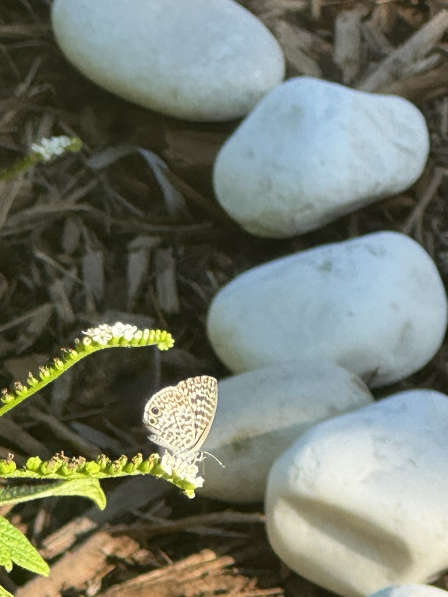

- A tiny pale-blue butterfly, barely bigger than a thumbnail, flickering low over the flower beds is a cassius blue — one of Florida's smallest and most common butterflies.
- Males shine pale blue above; females are duller, with more dusky gray and brown.
- Flip to the underside and you find a delicate maze of fine gray-and-white bands, with one or two small black-and-orange eyespots near the tail.
- The hindwing eyespots, paired with tiny tails the butterfly wiggles, create a "false head" that fools a predator into striking the wrong end.
Males pale blue; females duller blue-gray with brown.
White to pale gray with fine gray bands and one or two small black-and-orange eyespots near the tail.
Very small, wingspan around 1 in (2.5 cm).
Tiny threadlike tails on the hindwings.
Silent.
A very small, pale powder-blue butterfly fluttering low around flowers. The fine-banded underside with little eyespots near a tiny tail confirms a cassius blue.
Adults sip nectar from small flowers. Caterpillars feed on the flowers and buds of legumes and on plumbago.
Low around the flower beds and any plumbago plantings, fluttering close to the blooms. Look small — it is easy to miss.
Year-round in Florida's warm climate, most numerous in the warmer months.
Just watch and enjoy. Avoid handling its delicate wings; low-growing nectar flowers and plumbago will keep it around.
- © katiet5 (CC-BY-NC), via iNaturalist